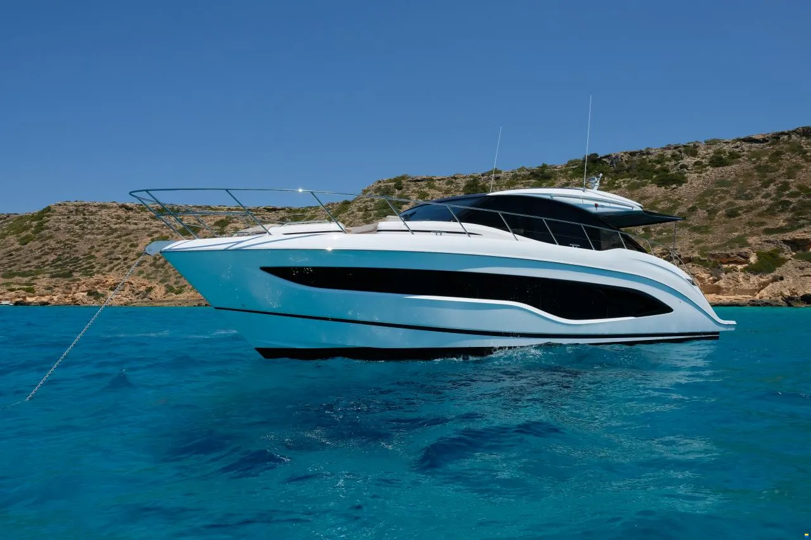
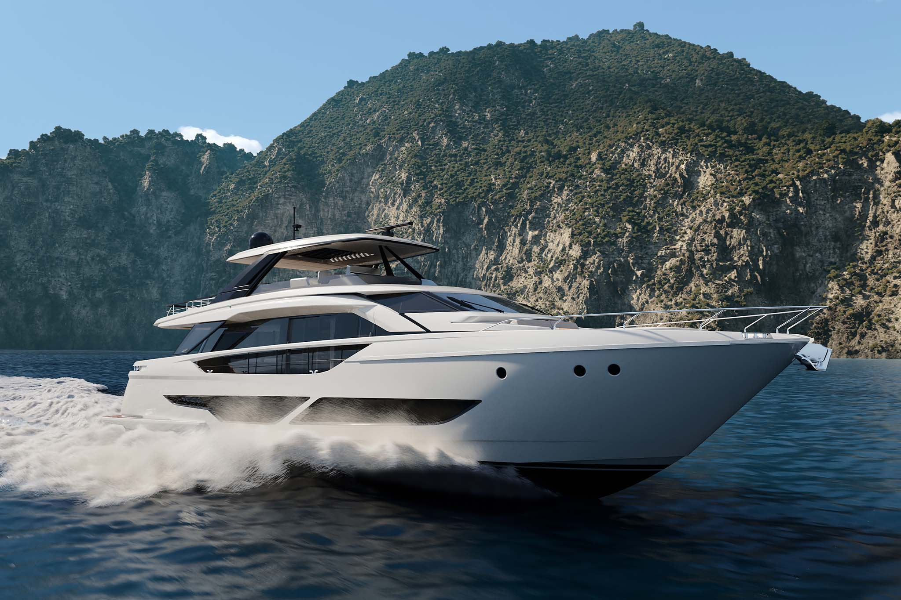
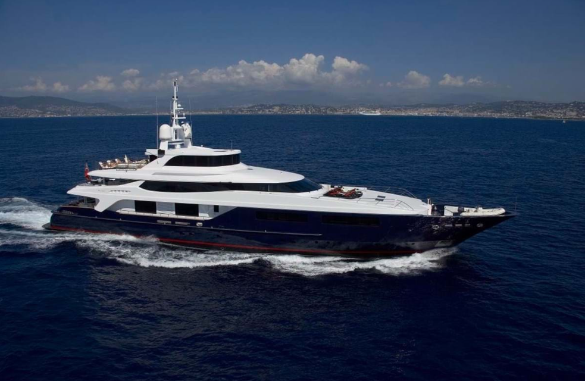
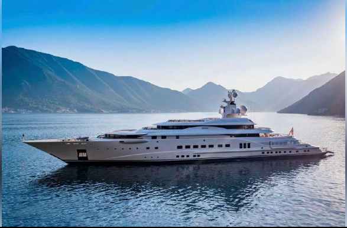

In vendita è la bellissima e nuovissima Princess V55. Completamente attrezzato con tutto ciò che il tuo cuore desidera. Dalla stabilizzazione Seakeeper al controllo tramite joystick fino alle 3 cabine complete sottocoperta con spazio per un massimo di 6 persone, fanno di questo yacht un sogno sull'acqua.
Un'altra geniale caratteristica della nostra nuova Princess V55 è la porta del salone che può essere abbassata nel pavimento. Ciò significa che i vantaggi di uno yacht aperto possono essere combinati con i vantaggi di uno yacht con un salone chiuso premendo un pulsante. SPECIFICHE:
Come bonus, ci sono due motori diesel Volvo nella sala macchine, ciascuno con 1000 CV e trasmissione in linea d'asse, che accelerano la nave fino a 37 nodi e assicurano comunque consumi moderati a velocità di crociera. L'attenzione ai dettagli e il pacchetto completo sono davvero unici in questo yacht.
PREZZO: EUR 2,396,000 COMPRALO ORA
2.
FERRETTI YACHTS 860

Ferretti Yachts 860 è il nuovo progetto del Cantiere, evoluzione assoluta del concetto di flybridge.
Sopra gli standard
Uno yacht caratterizzato da un profilo imponente e filante con linee modulate e perfettamente armonizzate in ogni singolo dettaglio.Un ventaglio di emozioni
Dal relax della beach area, comoda e vivibile, si accede al garage dove i water toys e la moto d'acqua a due posti promettono esperienze intense.Elementi in evoluzione
La sapiente interconnessione, anche dal punto di vista degli arredi, tra esterni e interni assicura fluidità nelle esperienze di convivialità, relax e privacy a bordo.Al centro, fra ricercatezza e sobrietà
Il design degli interni è governato da linee morbide punteggiate da mobili freestanding dal disegno pulito di ispirazione all’art déco. SPECIFICHE:
MOTORI: 2 x MAN V12 2000 HP
LOA (lunghezza fuori tutto): 26.95 m
LARGHEZZA MASSIMA: 6,22 m
IMMERSIONE SOTTO LE ELICHE: 2,08 m
VELOCITÁ MASSIMA: 32 Nodi
VELOCITÁ DI CROCIERA: 27 Nodi
SERBATOIO CARBURANTE: 7.000 l
SERBATOIO ACQUA: 1.400 l
DISLOCAMENTO BARCA SCARICA: 72.000 Kg
DISLOCAMENTO BARCA CARICA: 82.000 Kg
CABINE: 4
SERVIZI: 4
PREZZO: EUR 7,840,000COMPRALO ORA
3.
BURKUT

BURKUT è uno yacht a motore lungo 54 metri (177,7 piedi) consegnato nel 2009 dal famoso cantiere navale italiano Baglietto. I suoi eleganti interni ed esterni sono opera del designer Francesco Paszkowski. Lanciata come quarta imbarcazione della serie di scafi in acciaio a piena dislocamento di Baglietto, BURKUT è classificata da Lloyd's e conforme alle normative MCA.
BURKUT può ospitare comodamente 10 ospiti in cinque spaziose cabine. La cabina armatoriale a tutta larghezza si trova sul ponte principale e dispone di uno studio privato, un salotto privato con bagno giorno separato, balconi mare a babordo e a tribordo, e un bagno en suite con passaggio. Altre quattro cabine per gli ospiti si trovano sul ponte inferiore, comprensive di tre cabine doppie e una cabina con due letti singoli, tutte con bagno e suite.Ampie terrazze esterne offrono molteplici opzioni per l'intrattenimento e il relax per tutti. SPECIFICHE:
Due motori Caterpillar da 2.000 cavalli, BURKUT dispone di una velocità di crociera di 12 nodi e una velocità massima di 15 nodi, con una portata transatlantica di 4.500 miglia nautiche. Gli stabilizzatori a zero velocità garantiscono un'esperienza di navigazione stabile e confortevole a bordo di BURKUT.
PREZZO: EUR 18,750,000 COMPRALO ORA
4.
LURSSEN CUSTOM

La Lurssen Custom del 2003 è un'apice di superyacht dalla pedigree indiscutibile. Si tratta di uno yacht a motore di 115 m (377,3 piedi) con un dislocamento di 5.403 GT.
Le caratteristiche esterne includono un ponte solarium con una grande piscina con getti a controcorrente e una vasca idromassaggio, un bar e una zona pranzo all'aperto. Ci sono cinque balconi e terrazze sul mare sui ponti principale e inferiore,.
Un ascensore serve tutti i ponti ospiti dal ponte inferiore al ponte solarium per un accesso multigenerazionale.
In avanti c'è un cinema a gradoni con un sistema audiovisivo di classe mondiale.Il ponte inferiore a poppa è dedicato al benessere. Ci sono una grande palestra completamente attrezzata, una stanza massaggi, una sala trattamenti. SPECIFICHE:
Due motori diesel Wartsila da 5.300 hp ciascuno le consentono di raggiungere una velocità massima di 20 nodi, naviga comodamente a 18 nodi e ha un'autonomia massima transoceanica di 6.000 miglia nautiche alla sua velocità di passaggio di 16 nodi. Due set di stabilizzatori a zero velocità di Quantum assicurano il comfort all'arrivo
PREZZO: EUR 185,000,000 COMPRALO ORA
 Massimiliano Finocchiaro
Massimiliano Finocchiaro